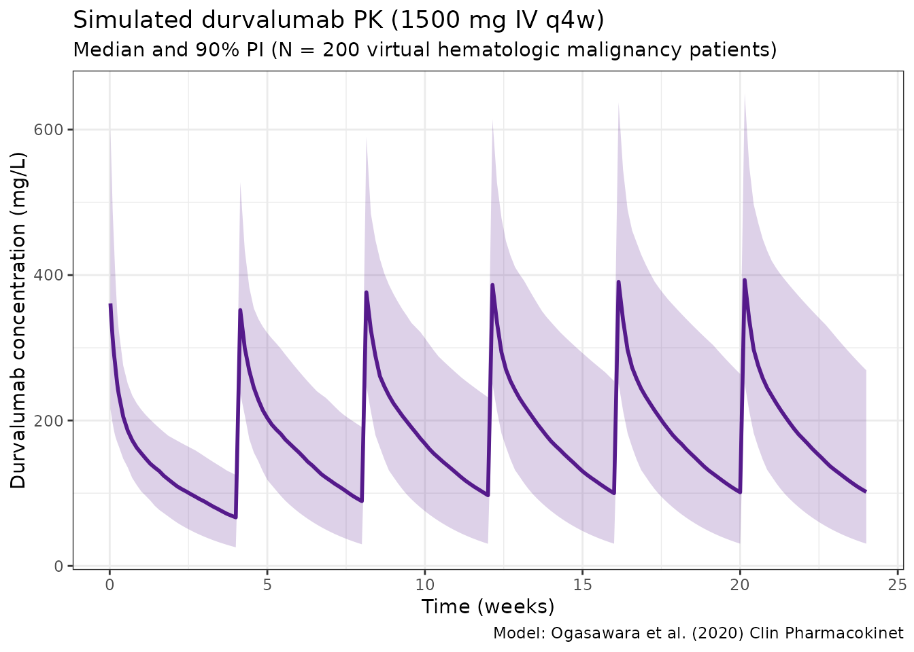
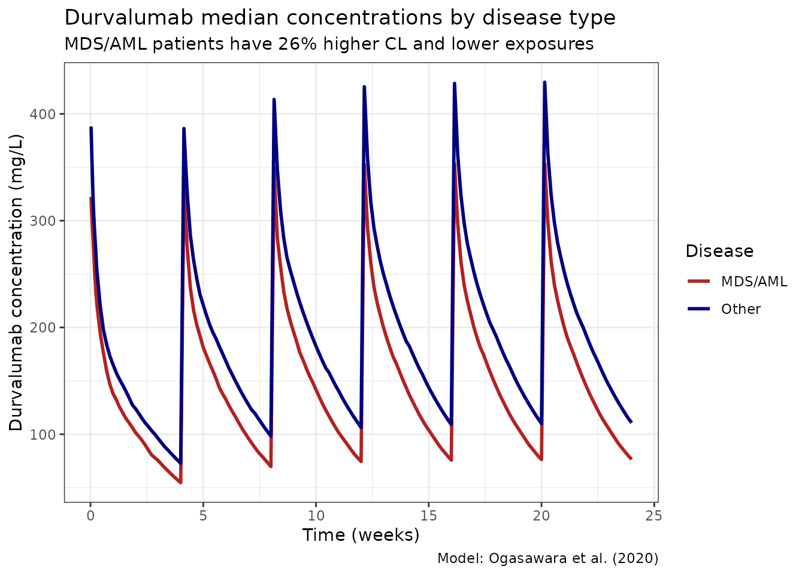

Ogasawara_2020_durvalumab
Source:vignettes/articles/Ogasawara_2020_durvalumab.Rmd
Ogasawara_2020_durvalumab.Rmd
library(nlmixr2lib)
library(rxode2)
#> rxode2 5.0.2 using 2 threads (see ?getRxThreads)
#> no cache: create with `rxCreateCache()`
library(dplyr)
#>
#> Attaching package: 'dplyr'
#> The following objects are masked from 'package:stats':
#>
#> filter, lag
#> The following objects are masked from 'package:base':
#>
#> intersect, setdiff, setequal, union
library(tidyr)
library(ggplot2)
library(PKNCA)
#>
#> Attaching package: 'PKNCA'
#> The following object is masked from 'package:stats':
#>
#> filterDurvalumab population PK simulation
Simulate durvalumab concentration-time profiles using the final population PK model from Ogasawara et al. (2020) in patients with hematologic malignancies (MDS/AML and multiple myeloma, N = 267).
Durvalumab is a human IgG1 kappa anti-PD-L1 checkpoint inhibitor. The model is a 2-compartment IV model with linear elimination and extensive covariate effects (11 covariate-parameter relationships). Anti-drug antibodies (ADA) were NOT examined as a covariate in this analysis.
Note: Time units are hours (matching the original publication).
Source: Table 3 of Ogasawara et al. (2020) Clin Pharmacokinet. 59(2):217-227. doi:10.1007/s40262-019-00804-x. Parameters and equations verified against PMC7007418 (Table 3 footnotes b and c).
Virtual population
set.seed(2020)
n_subj <- 500
pop <- data.frame(
ID = seq_len(n_subj),
WT = rlnorm(n_subj, log(74.7), 0.25), # Median 74.7 kg (Table 2)
ALB = rnorm(n_subj, 40, 5), # Median 40 g/L (Table 2)
IGG = rlnorm(n_subj, log(7.6), 0.35), # Median 7.6 g/L (Table 2)
SPDL1 = rlnorm(n_subj, log(173.8), 0.8), # Median 173.8 pg/mL (Table 2)
LDH = rlnorm(n_subj, log(216), 0.4), # Median 216 U/L (Table 2)
SEX = rbinom(n_subj, 1, 0.352), # 35.2% female (Table 2)
MDSAML = rbinom(n_subj, 1, 0.37), # 37% MDS/AML (Table 2)
MM = 0
)
pop$ALB <- pmax(20, pmin(pop$ALB, 55))
# MM is complement of MDSAML (simplified: NHL excluded)
pop$MM <- ifelse(pop$MDSAML == 0, rbinom(n_subj, 1, 0.73), 0)Dosing dataset
Simulate durvalumab 1500 mg IV every 4 weeks (q4w) for 24 weeks. Infusion over 1 hour.
dose_weeks <- seq(0, 20, by = 4)
dose_times_h <- dose_weeks * 7 * 24 # weeks to hours
obs_times_h <- sort(unique(c(
seq(0, 48, by = 4), # Dense first 2 days
seq(48, max(dose_times_h) + 28 * 24, by = 24) # Daily to end
)))
d_dose <- pop %>%
crossing(TIME = dose_times_h) %>%
mutate(AMT = 1500, EVID = 1, CMT = 1, DUR = 1, DV = NA_real_)
d_obs <- pop %>%
crossing(TIME = obs_times_h) %>%
mutate(AMT = NA_real_, EVID = 0, CMT = 1, DUR = NA_real_, DV = NA_real_)
d_sim <- bind_rows(d_dose, d_obs) %>%
arrange(ID, TIME, desc(EVID)) %>%
as.data.frame()Simulate
mod <- readModelDb("Ogasawara_2020_durvalumab")
sim <- rxSolve(mod, d_sim, returnType = "data.frame")
#> ℹ parameter labels from comments will be replaced by 'label()'Concentration-time profiles
sim_summary <- sim %>%
filter(time > 0) %>%
group_by(time) %>%
summarise(
median = median(Cc, na.rm = TRUE),
lo = quantile(Cc, 0.05, na.rm = TRUE),
hi = quantile(Cc, 0.95, na.rm = TRUE),
.groups = "drop"
)
ggplot(sim_summary, aes(x = time / (24 * 7))) +
geom_ribbon(aes(ymin = lo, ymax = hi), alpha = 0.2, fill = "purple4") +
geom_line(aes(y = median), color = "purple4", linewidth = 1) +
labs(
x = "Time (weeks)",
y = "Durvalumab concentration (mg/L)",
title = "Simulated durvalumab PK (1500 mg IV q4w)",
subtitle = "Median and 90% PI (N = 500 virtual hematologic malignancy patients)",
caption = "Model: Ogasawara et al. (2020) Clin Pharmacokinet"
) +
theme_bw()
PK by disease type
# The rxSolve output carries covariates through, so MDSAML is already in sim
sim_df_disease <- as.data.frame(sim)
sim_df_disease <- sim_df_disease[sim_df_disease$time > 0, ]
sim_df_disease$Disease <- ifelse(sim_df_disease$MDSAML == 1, "MDS/AML", "Other")
sim_disease_summary <- sim_df_disease %>%
group_by(time, Disease) %>%
summarise(median = median(Cc, na.rm = TRUE), .groups = "drop")
ggplot(sim_disease_summary, aes(x = time / (24 * 7), y = median, color = Disease)) +
geom_line(linewidth = 1) +
scale_color_manual(values = c("MDS/AML" = "firebrick", "Other" = "navy")) +
labs(
x = "Time (weeks)",
y = "Durvalumab concentration (mg/L)",
title = "Durvalumab median concentrations by disease type",
subtitle = "MDS/AML patients have 26% higher CL and lower exposures",
caption = "Model: Ogasawara et al. (2020)"
) +
theme_bw()
NCA analysis
# Use 3rd dosing interval (weeks 8-12 = hours 1344-2016)
sim_df <- as.data.frame(sim)
# Build unique subject key from sim.id and id
if (all(c("sim.id", "id") %in% names(sim_df))) {
sim_df$subject <- paste(sim_df$sim.id, sim_df$id, sep = "_")
} else if ("id" %in% names(sim_df)) {
sim_df$subject <- sim_df$id
} else {
sim_df$subject <- sim_df$sim.id
}
nca_data <- data.frame(
subject = sim_df$subject,
time_rel = (sim_df$time - 1344) / 24, # Convert to days relative to dose 3
Cc = sim_df$Cc
)
nca_data <- nca_data[nca_data$time_rel >= 0 & nca_data$time_rel <= 28 & nca_data$Cc > 0, ]
conc_obj <- PKNCAconc(nca_data, Cc ~ time_rel | subject)
dose_obj <- PKNCAdose(
data.frame(subject = unique(nca_data$subject), time_rel = 0, AMT = 1500),
AMT ~ time_rel | subject
)
data_obj <- PKNCAdata(conc_obj, dose_obj,
intervals = data.frame(start = 0, end = 28,
cmax = TRUE, tmax = TRUE,
auclast = TRUE, half.life = TRUE))
nca_results <- pk.nca(data_obj)
#> ■■■■■■■■ 23% | ETA: 11s
#> ■■■■■■■■■■■■■■ 45% | ETA: 8s
#> ■■■■■■■■■■■■■■■■■■■■■ 66% | ETA: 5s
#> ■■■■■■■■■■■■■■■■■■■■■■■■■■■ 88% | ETA: 2s
nca_summary <- summary(nca_results)
knitr::kable(nca_summary, digits = 2,
caption = "NCA summary (3rd dosing interval, weeks 8-12)")| start | end | N | auclast | cmax | tmax | half.life |
|---|---|---|---|---|---|---|
| 0 | 28 | 500 | 5180 [39.5] | 387 [27.9] | 1.00 [1.00, 1.00] | 19.7 [7.57] |
Notes
- Model: 2-compartment IV with linear elimination. No TMDD.
- 11 covariate effects including soluble PD-L1 (the drug’s target) on CL.
- Log-additive residual error (concentrations log-transformed prior to modeling).
- Time in hours — unlike most mAb models that use days.
- ADA not examined as a covariate in this analysis.
- Reference values are Table 2 medians: ALB 40 g/L, IgG 7.61 g/L, sPD-L1 173.8 pg/mL, LDH 216 U/L, WT 74.7 kg.
- Albumin, IgG, sPD-L1, LDH were time-varying covariates in the model.
- MDS/AML effect: 26% higher CL (clinically meaningful).